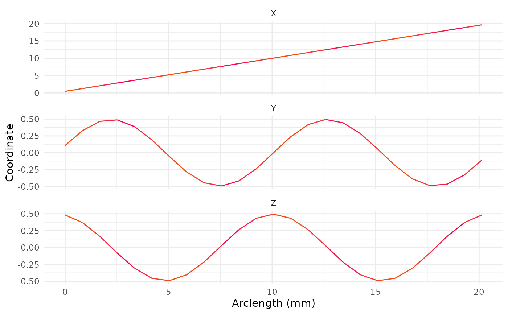
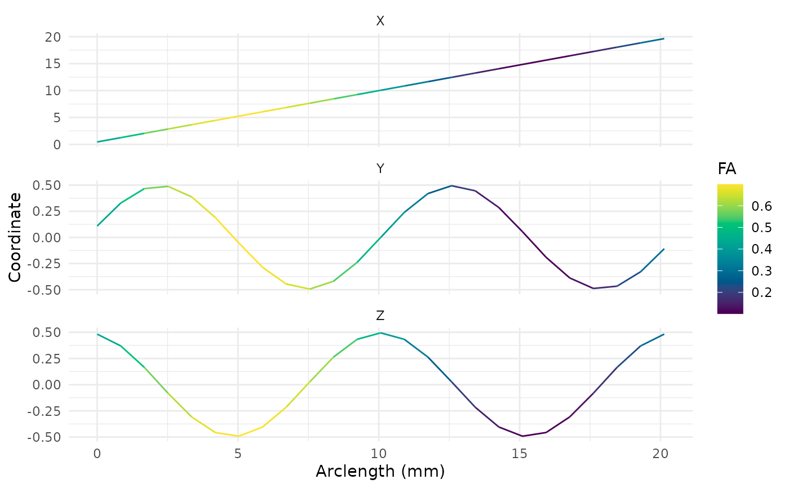
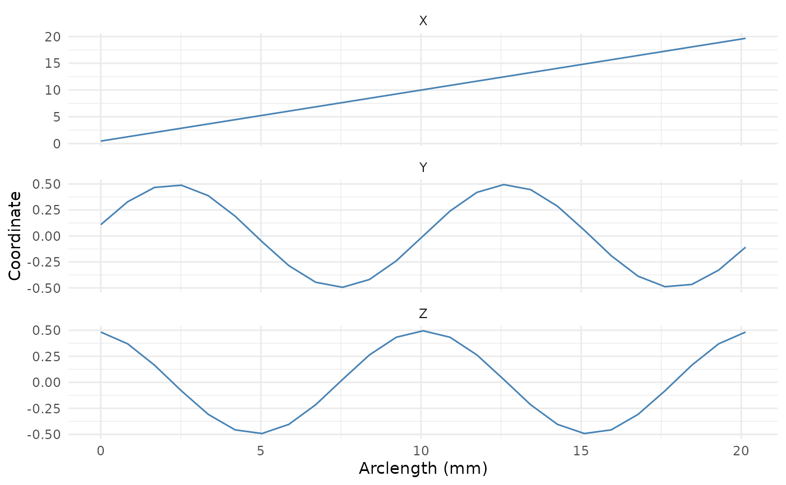

plot2d() is an S7 generic that renders streamlines on a 2D canvas as a
static ggplot2 figure: each streamline is re-parametrized by arc
length, so the horizontal axis is distance travelled along the fibre, and
the X / Y / Z coordinates are plotted against it in three vertically stacked
facets. This makes it easy to compare tract geometry against profiles of
diffusion measures such as FA or MD along the tract.
Geometries are downsampled: points are grouped into equal-width chunks of
arclength (n_chunks, default 100), and each chunk contributes one mean
point. Scalar point attributes are averaged within each chunk; per-streamline
and per-bundle metadata are carried along unchanged.
Methods are available for the following classes:
Usage
plot2d(
x,
facet = c("X", "Y", "Z"),
color = "orientation",
palette = "Viridis",
n_chunks = 100L,
linewidth = 0.5,
alpha = 1,
...
)Arguments
- x
A fiber::streamline, fiber::bundle, or fiber::bundle_set object.
- facet
Character. Which coordinate columns to draw as facets. Defaults to
c("X", "Y", "Z"), stacked top to bottom; pass"X"(or any subset) for a single facet.- color
Controls how the line colour is assigned. Accepted values:
"orientation"(default): point colour encodes the local fibre direction, mapped through the standard DTI (left–right = red, anterior–posterior = green, superior–inferior = blue) convention.A metadata key: a string matching a key in
@point_data(per-point scalar, averaged per chunk) or@streamline_data/@bundle_data(a single constant per streamline, broadcast to its points). Numeric values are mapped throughpalette; character values are coloured categorically. This is the natural way to overlay an FA or MD profile on a tract.A CSS/hex colour string: e.g.
"#E69F00"or"steelblue". All lines are drawn in that fixed colour.
- palette
A colour scale name applied when
coloris a numeric metadata key. Resolved throughgrDevices::hcl.colors(). Defaults to"Viridis".- n_chunks
Numeric. Number of equal-arclength chunks to average each streamline into (default 100). Lower for lighter figures, higher for finer geometry. The chunk count is capped at the streamline's point count.
- linewidth
Numeric. Width of the drawn lines, in ggplot2 units (roughly millimetres). Defaults to
0.5.- alpha
Numeric in [0, 1]. Line opacity. Defaults to
1.- ...
Additional named arguments passed to
ggplot2::facet_wrap()(for examplescales = "free_y").
Value
A ggplot2::ggplot() figure with one facet per coordinate column.
Examples
library(fiber)
# A single fibre curving through 3-D space with a per-point FA profile.
t <- seq(0, 4 * pi, length.out = 200)
pts <- cbind(
X = seq_len(200) * 0.1,
Y = 0.5 * sin(t),
Z = 0.5 * cos(t)
)
sl <- streamline(
points = pts,
point_data = list(FA = 0.4 + 0.3 * sin(t / 2)),
streamline_data = list(mean_FA = 0.5)
)
# Stack the X / Y / Z coordinates against arclength.
plot2d(sl)

# Overlay a per-point diffusion profile as the line colour.
plot2d(sl, color = "FA")

# A fixed colour.
plot2d(sl, color = "steelblue")
